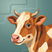
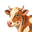
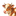
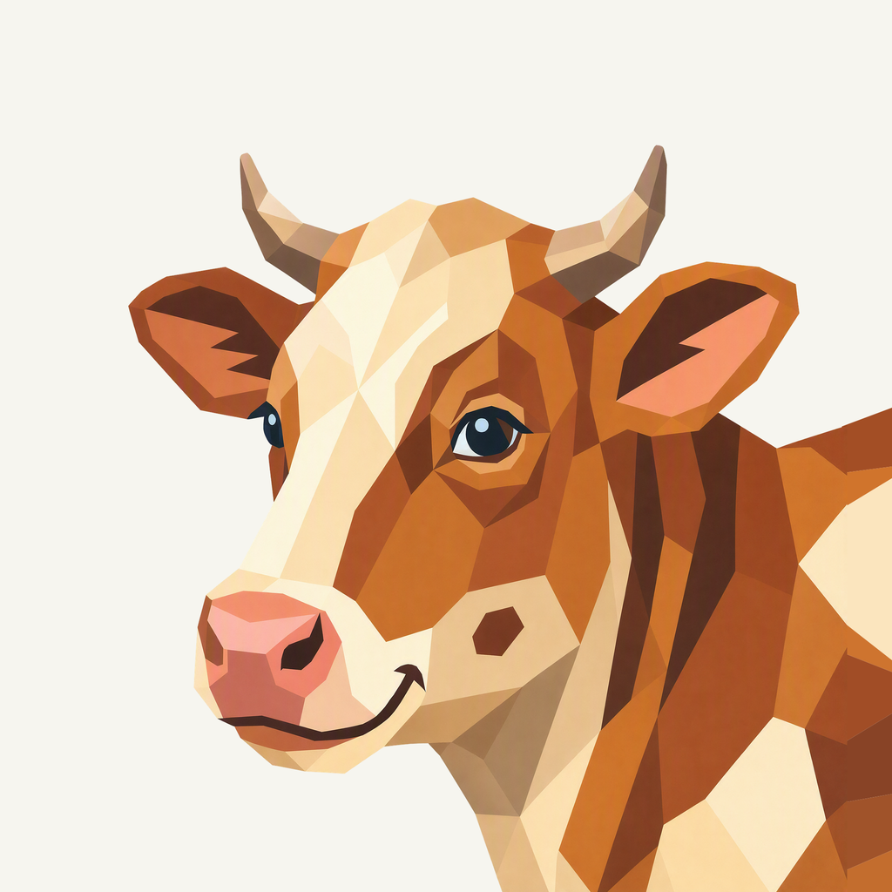
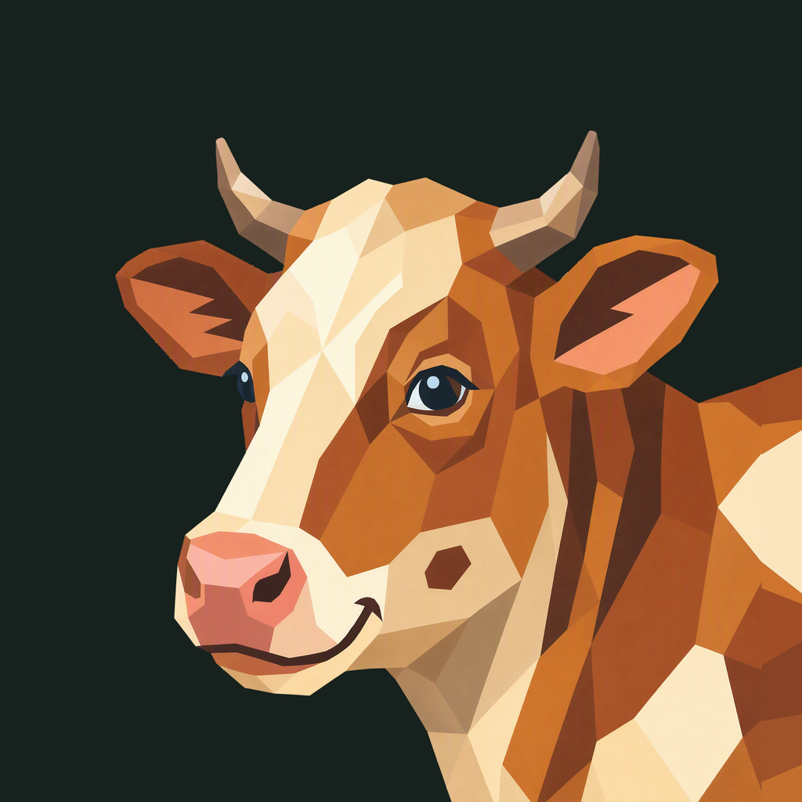

01 / Composition
A gentle three-quarter turn
The familiar face keeps both horns and ears clear. A short neck settles into a broad shoulder entering the lower-right frame, replacing the old internal bust cut.
Animal family · Refined framing
A gentle turn, with the cow continuing naturally beyond the viewfinder.
Adopted framing repair · finishing 02
Native 2048 × 2048

01 / Composition
The familiar face keeps both horns and ears clear. A short neck settles into a broad shoulder entering the lower-right frame, replacing the old internal bust cut.
02 / Drawing
Broad copper and cream facets preserve the cow’s expression, coral nose, and blue eyes. This framing repair retains the existing accents without adding accessories.
03 / Presentation
The retained muted green field uses unequal stepped contours and softly lit edges. Its cool color contrasts the warm animal while the finance app theme remains separate.
Presentation tiles at 128/64 px; transparent artwork for small app and browser marks.



The cream blaze, paired horns, and coral muzzle stay legible at 32 px. Smaller color planes merge at 16 px; transparent marks serve the sidebar and browser, while installed icons use the square presentation.
A designed background, with colors sampled from the native generated artwork.
Select a swatch to copy its hex value. The Noheir UI primary (#25AFF4) remains a separate product color.
One transparent foreground, checked on two contrasting backgrounds.


Azure Foundry · gpt-image-2 · one request · native 2048 × 2048
Loading prompt…
The liked original defines the animal, expression, and palette. Frogie guides connected flat facets; these owner-provided boards guide the independent background, offset framing, and matte surface.


{kind=link}
{kind=link}
{kind=link}
{kind=link}
{kind=link}